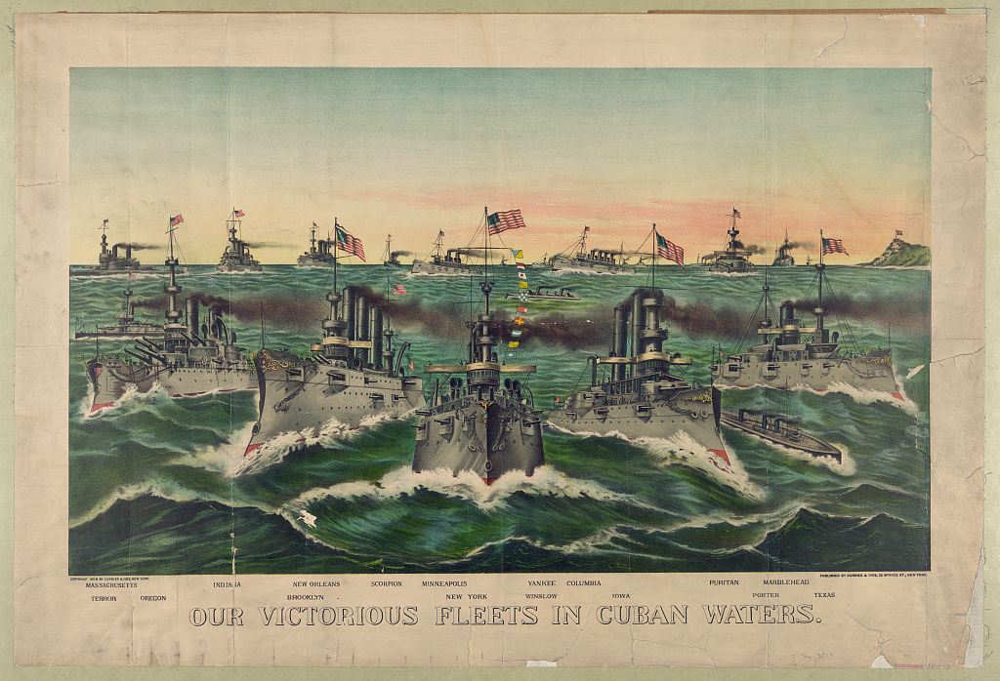

Directions: Study the print and the background note, then answer the questions.

Background. Currier and Ives, a firm that sold color prints for American homes, published this lithograph in 1898, the year of the war with Spain. It is believed to be among the last prints the firm ever produced. The print names the battleship Iowa, then the largest ship in the American navy, and the cruiser New Orleans, and it shows the fleet in calm seas under a clear sky after the naval victories at Manila Bay in the Philippines and at Santiago in Cuba. Prints like this one were made to be bought, framed, and hung on a wall.
Treaty of Paris: the December 1898 treaty that ended the war and transferred Puerto Rico, Guam, and the Philippines from Spain to the United States
cession: the formal transfer of territory from one country to another by treaty
1. What claim about American naval power does this print make, and which two details in the picture or the background carry the claim?
2. This print was made to sell to families at home. Name two things about the war of 1898 that a buyer would never learn from this picture, and explain why the firm left them out.
3. Under the Treaty of Paris, which three places did Spain cede to the United States, what did the United States pay for one of them, and what happened to Cuba instead of cession?
1. What claim does the print make about American naval power, and which details carry it? [Blueprint 2: The Spanish-American War] The print claims that American sea power was modern, large, and victorious. Details: the named battleship Iowa, identified as the largest ship in the navy, fills the foreground; the fleet is shown in strength under a clear, calm sky; the title itself, "Our Victorious Fleets," announces the verdict before the viewer studies the picture. Strong answers note that the victories named, Manila Bay (May 1, 1898) and Santiago (July 3, 1898), were real and lopsided, so the claim rests on fact presented as celebration.
2. What would a buyer never learn from the picture, and why was it left out? [Blueprint 2: The Spanish-American War] Any two of: the far larger American death toll from disease (about 2,400 deaths in all, fewer than 400 of them in battle, against typhoid in the training camps and malaria and yellow fever in Cuba); the wreck of the Maine and the unresolved question of responsibility that started the war; the Cubans and Filipinos whose lands were being fought over, who appear nowhere in the picture; the debate at home over whether the United States should take colonies at all. The firm left these out because the print was a product: patriotic wall art sells a victory, not a cost accounting, and Currier and Ives made pictures buyers wanted to live with.
3. Treaty terms: cessions, payment, and Cuba. [Blueprint 2: The Spanish-American War] Spain ceded Puerto Rico and Guam (Article II) and the Philippine Islands (Article III). The United States paid Spain twenty million dollars for the Philippines, to be paid within three months after the exchange of ratifications. Cuba was not ceded. Spain relinquished its claim to Cuba under Article I, and Cuba became independent after a temporary American occupation, subject to the Platt Amendment, which made it a protectorate in practice.
Teacher note. This check is formative. The common weak answer on question 2 names the disease toll but cannot say why a print seller would omit it; push students to the purpose of the object, a picture made for a home wall. If question 3 shows confusion between cession and relinquishment, reteach Article I against Articles II and III before the writing task.